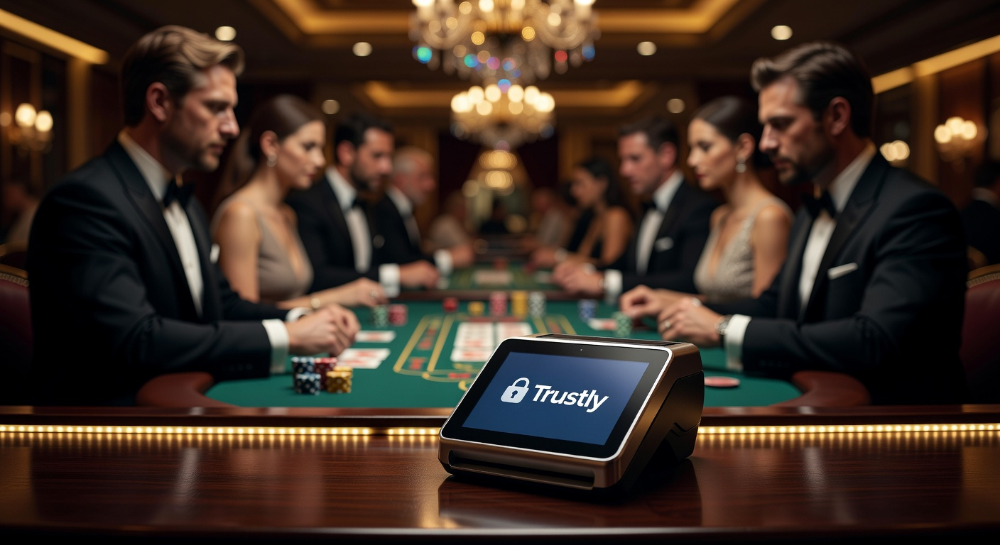
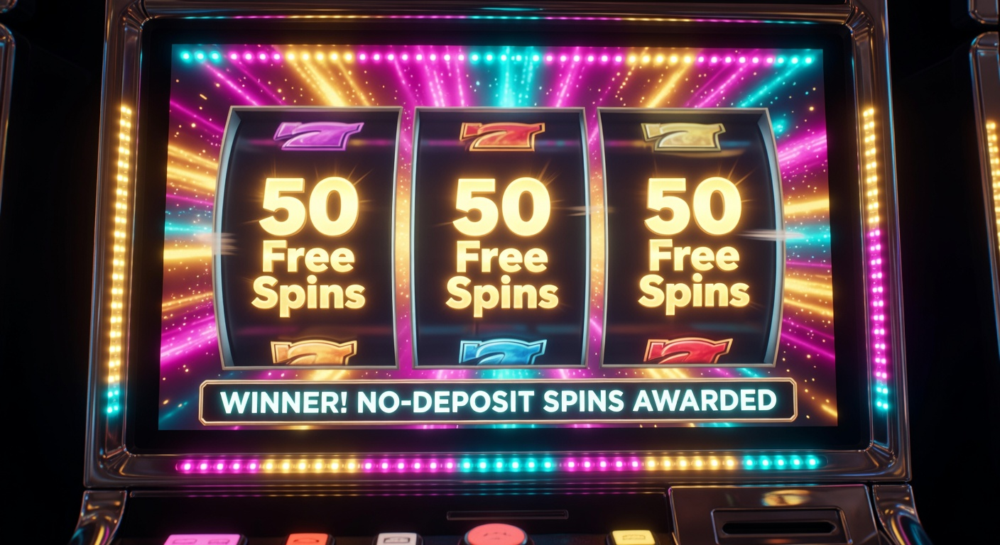
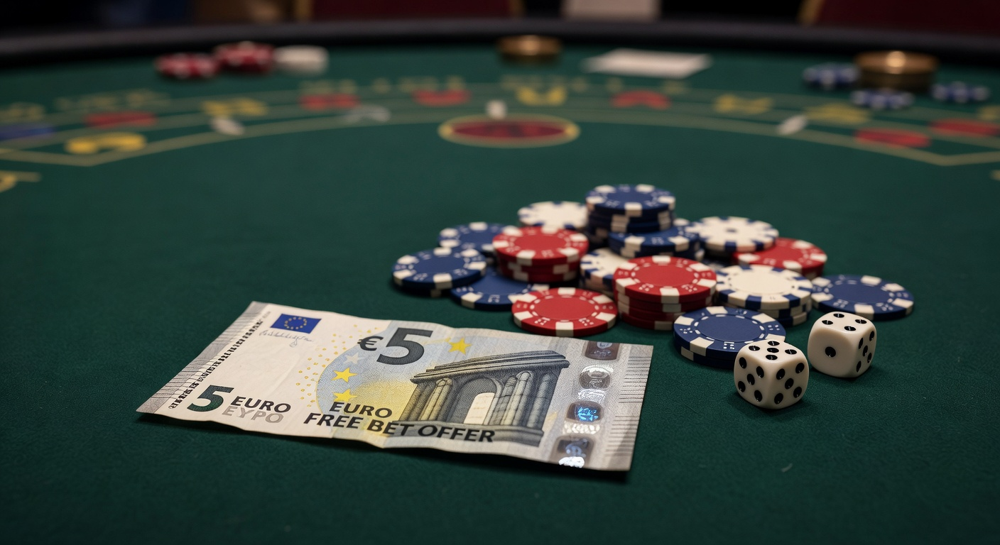

Guida Completa al Miglior Casino con Trustly del 2026
Il panorama del gioco d'azzardo digitale in Italia ha subito una trasformazione radicale nel corso del 2026. Con l'avvento di tecnologie di open banking sempre più integrate, la ricerca di un casino con trustly è diventata la priorità per migliaia di giocatori che esigono velocità e sicurezza senza compromessi. Questo sistema svedese ha rivoluzionato il concetto di transazione finanziaria, eliminando le attese snervanti tipiche dei bonifici tradizionali.
Scegliere un casino con trustly oggi significa affidarsi a un protocollo che mette in comunicazione diretta il proprio istituto bancario con la piattaforma di gioco. Non è più necessario creare portafogli elettronici intermedi o inserire lunghi numeri di carta di credito. La semplicità d'uso, unita alla protezione garantita dalla direttiva europea sui servizi di pagamento, rende questa opzione la preferita dagli utenti esperti del settore IT.
In questa analisi approfondita, esploreremo le migliori piattaforme disponibili nel 2026, valutando non solo i bonus ma anche l'infrastruttura tecnologica che supporta questi siti. Che tu stia cercando una vasta gamma di slot o tavoli live gestiti da professionisti, la nostra selezione ti guiderà verso la scelta più consapevole e sicura del mercato attuale.
Come selezioniamo i migliori casino online
La nostra metodologia di valutazione per identificare il miglior casino con trustly si basa su criteri rigorosi e test empirici effettuati dai nostri esperti. Il primo pilastro è la stabilità della connessione API tra il fornitore e le banche italiane. Nel 2026, la velocità di esecuzione è fondamentale: un deposito deve essere istantaneo per permettere all'utente di accedere subito alle sue sessioni di gioco preferite.
Un altro aspetto cruciale riguarda l'esperienza utente mobile. Ogni casino online che raccomandiamo deve offrire un'interfaccia fluida, ottimizzata per i dispositivi di ultima generazione. Verifichiamo che la procedura di deposito tramite il metodo di pagamento Trustly sia integrata perfettamente, riducendo al minimo i passaggi necessari per confermare l'operazione tramite dati biometrici o app bancaria.
Infine, analizziamo la libreria dei giochi. Collaboriamo solo con piattaforme che ospitano i titoli dei migliori provider mondiali. Per saperne di più sulla sicurezza dei dati nel settore bancario digitale, puoi consultare le linee guida della European Banking Authority. La trasparenza dei termini e delle condizioni è l'ultimo, ma non meno importante, filtro che applichiamo prima di inserire un brand nella nostra lista d'eccellenza.
Info

Trustly Group AB è un'azienda svedese che opera sotto la supervisione della Financial Supervisory Authority svedese. Fondata originariamente nel 2008, nel 2026 si è consolidata come il leader globale dell'online banking transazionale. In un casino con trustly, l'utente non condivide mai le proprie credenziali bancarie con l'operatore di gioco, agendo Trustly come un ponte cifrato altamente sicuro.
Questo metodo di pagamento utilizza il protocollo di sicurezza della tua stessa banca. Se la tua banca utilizza l'autenticazione a due fattori, questa verrà applicata anche durante la transazione sul casino online trustly. È una soluzione ideale per chi desidera mantenere la massima riservatezza e non vuole vedere nomi di società di gioco sull'estratto conto della propria carta di credito.
La tecnologia Pay N Play, introdotta anni fa e ora standard di settore, permette in molti casi di iniziare a giocare in un casino con trustly senza nemmeno compilare lunghi moduli di registrazione. Il sistema trasmette in modo sicuro le informazioni necessarie per la verifica dell'identità direttamente dalla banca, velocizzando drasticamente i tempi di accesso ai tavoli verdi virtuali.
| Caratteristica | Vantaggio per il Giocatore | Velocità |
|---|---|---|
| Open Banking | Nessuna registrazione account Trustly necessaria | Istantaneo |
| Sicurezza Bancaria | Crittografia end-to-end certificata | Massima |
| Prelievi Rapidi | Fondi sul conto in pochi minuti | < 15 minuti |
| Zero Commissioni | Il servizio è gratuito per l'utente finale | N/A |
Bonus
Le promozioni offerte da un casino con trustly nel 2026 sono tra le più competitive del mercato. Poiché le transazioni tramite questo sistema hanno costi di gestione inferiori per l'operatore rispetto alle carte di credito, i casinò tendono a premiare gli utenti che lo scelgono. Spesso si trovano bonus sul primo deposito che raddoppiano il capitale iniziale, permettendo di esplorare la sezione slot con un bankroll più corposo.
Molti operatori offrono anche bonus specifici legati all'utilizzo dei pagamenti trustly casino. Ad esempio, potresti ricevere pacchetti di giri gratuiti aggiuntivi solo per aver selezionato questo canale finanziario. È fondamentale, tuttavia, leggere sempre i requisiti di scommessa (wagering) associati a queste offerte per capire quanto sia effettivamente vantaggioso il bonus nel lungo periodo.
Nel contesto attuale, i programmi fedeltà giocano un ruolo chiave. Se utilizzi costantemente un casino con trustly, potresti accedere a livelli VIP che offrono limiti di prelievo più alti e cashback settimanali. La trasparenza è garantita dal fatto che ogni transazione è tracciabile e verificabile istantaneamente tramite il proprio conto bancario, rendendo la gestione dei bonus estremamente lineare.
50 Free Spin Senza Deposito

Una delle offerte più cercate dai giocatori italiani nel 2026 è senza dubbio quella dei 50 Free Spin Senza Deposito. Molti nuovi brand scelgono questa strategia per farsi conoscere, permettendo agli utenti di testare la piattaforma senza alcun rischio finanziario. In un casino con trustly, ricevere questi giri gratuiti è spesso legato alla semplice verifica del proprio conto tramite il sistema bancario istantaneo.
Questi giri gratuiti sono solitamente validi su titoli iconici come Book of Dead di Play'n GO o la celebre Starburst di NetEnt. Utilizzare i giri senza deposito permette di valutare la velocità del software e la reattività del sito prima di procedere con un versamento reale. È un'ottima occasione per testare l'interfaccia del casino con trustly scelto e capire se fa al caso proprio.
Ricorda che le vincite derivanti dai giri gratuiti sono solitamente accreditate come "Fun Bonus". Questo significa che dovrai giocarle un certo numero di volte prima di poterle trasformare in saldo reale prelevabile. Nonostante ciò, rimane una delle promozioni più apprezzate perché offre una chance concreta di vincita senza toccare il proprio portafoglio, un vantaggio non indifferente nel panorama del 2026.
5€ Freebet Senza Deposito - Immediato

Per gli amanti delle scommesse sportive integrate, la 5€ Freebet Senza Deposito - Immediato rappresenta il complemento perfetto all'esperienza di gioco. Molti siti che operano come casino con trustly offrono anche una sezione dedicata allo sport, e questa piccola scommessa gratuita serve a incentivare l'esplorazione di nuovi mercati, come gli eSports o le scommesse live in ultra-HD, standard ormai consolidato nel 2026.
Il vantaggio di ricevere questa freebet in un casino con trustly è la rapidità con cui viene erogata. Grazie alla verifica istantanea dell'identità tramite l'open banking, il sistema può accreditare il bonus in pochi secondi, permettendoti di piazzare la tua giocata su un evento imminente senza dover attendere ore per la convalida dei documenti cartacei. Questo livello di efficienza è ciò che distingue i migliori metodi di pagamento moderni.
Sebbene 5€ possano sembrare una cifra modesta, nel 2026 le quote sono diventate molto dinamiche e ben calibrate. Una freebet ben piazzata può generare un piccolo profitto iniziale che può essere poi utilizzato per provare nuovi giochi di slot o tavoli di roulette. È il punto di partenza ideale per chi approccia per la prima volta un casinò online trustly e vuole muoversi con cautela ma con la possibilità di ottenere un ritorno economico reale.
I Migliori Casino con Trustly del 2026
Abbiamo selezionato per voi le piattaforme più affidabili che supportano Trustly quest'anno. Ognuna di esse è stata testata per garantire un'esperienza di gioco eccellente e pagamenti puntuali.
- Millioner: Una piattaforma di alto livello con una vasta selezione di giochi dal vivo. Ti consigliamo di provare l'esperienza su Millioner per i suoi bonus esclusivi.
- Roulettino: Specializzato in giochi da tavolo, questo sito offre un'interfaccia impeccabile. Scopri le promozioni su Roulettino oggi stesso.
- Wyns: Conosciuto per la rapidità dei suoi pagamenti e un servizio clienti d'eccellenza. Registrati su Wyns per un'esperienza premium.
- Kinbet: Un operatore emergente che sta scalando le classifiche grazie a un'offerta di slot impareggiabile. Visita Kinbet per saperne di più.
- Dragonia: Atmosfera coinvolgente e un catalogo giochi costantemente aggiornato. Entra nel mondo di Dragonia per bonus unici.
- Divaspin: Eleganza e premi elevati caratterizzano questo operatore moderno. Non perdere le offerte di Divaspin.
Se sei alla ricerca di opzioni con soglie d'ingresso molto basse, potresti voler consultare la nostra guida dedicata al casinò non aams deposito 10 euro, dove troverai operatori che accettano piccoli versamenti tramite vari sistemi digitali.
Pro
L'utilizzo di un casino con trustly offre vantaggi innegabili che hanno spinto questo metodo in cima alle preferenze globali. Innanzitutto, la velocità: i depositi prelievi sono quasi istantanei. Mentre con altri sistemi potresti dover attendere giorni per vedere le tue vincite sul conto, Trustly processa le operazioni nel 2026 con una rapidità che spesso scende sotto i dieci minuti.
La sicurezza è un altro punto di forza indiscutibile. Poiché non c'è bisogno di condividere dati sensibili come il numero della carta o il codice CVV, il rischio di phishing o furto d'identità è ridotto al minimo. In un casino trustly sicuri, ogni transazione richiede l'autorizzazione esplicita tramite la tua banca, garantendo un controllo totale sui movimenti del tuo denaro.
Infine, la semplicità d'uso. Non è necessario ricordare nuove password o gestire un ennesimo account online. Tutto ciò che serve sono le tue credenziali bancarie abituali. Questo rende il casino con trustly l'opzione perfetta per chi cerca un'esperienza "plug and play", senza complicazioni burocratiche o lunghi tempi di attesa per la configurazione dei metodi di pagamento.
Contro
Nonostante i numerosi pregi, un casino con trustly può presentare alcuni svantaggi. Il limite principale è la dipendenza dalla cooperazione bancaria. Anche se nel 2026 quasi tutti i principali istituti italiani supportano l'open banking, potrebbero esserci ancora piccole banche locali che non hanno completato l'integrazione, rendendo impossibile l'utilizzo di questo servizio per i loro correntisti.
Un altro aspetto da considerare riguarda la gestione del budget. La velocità estrema con cui è possibile effettuare un deposito trustly italia potrebbe indurre i giocatori meno esperti a ricariche troppo frequenti. È fondamentale mantenere sempre un approccio responsabile al gioco, impostando dei limiti di versamento giornalieri o settimanali direttamente all'interno della piattaforma scelta.
Infine, alcuni operatori potrebbero escludere i pagamenti trustly casino da determinate promozioni di benvenuto molto specifiche, sebbene questa pratica stia diventando rara nel 2026. È sempre opportuno controllare i termini del metodo di pagamento preferito prima di procedere, per assicurarsi di non perdere vantaggiose opportunità di gioco.
Registrazione e Verifica dell’Account
Nel 2026, la procedura di registrazione in un casino con trustly è stata ottimizzata per essere il più rapida possibile. Grazie alla tecnologia "Know Your Customer" (KYC) automatizzata, quando effettui il tuo primo deposito, Trustly trasmette in modo sicuro i dati necessari per verificare la tua identità (come nome, data di nascita e indirizzo) direttamente dalla tua banca. Questo processo è conforme a tutte le normative vigenti sulla privacy.
In molti casi, questo significa che non dovrai inviare foto della tua carta d'identità o bollette per confermare la residenza, eliminando una delle fasi più noiose dell'iscrizione ai casinò online. La verifica avviene "dietro le quinte", permettendoti di essere operativo in pochi istanti. Questo sistema è particolarmente apprezzato dagli utenti IT che conoscono il valore della protezione dei dati personali.
Se invece preferisci un approccio più tradizionale, puoi sempre optare per la registrazione manuale. Tuttavia, anche in questo caso, collegare il tuo conto bancario tramite Trustly semplificherà enormemente le operazioni future. La sicurezza è garantita dalla crittografia di livello militare impiegata dal fornitore, rendendo ogni casino online trustly un ambiente protetto e affidabile.
Depositi e Prelievi
Effettuare depositi prelievi in un casino con trustly è un'operazione estremamente intuitiva nel 2026. Per depositare, basta selezionare Trustly nella cassa del il sito, inserire l'importo desiderato e scegliere la propria banca dalla lista. Verrai reindirizzato all'interfaccia sicura della tua banca dove potrai autorizzare il pagamento con l'app o un SMS OTP. I fondi appariranno immediatamente sul tuo saldo di gioco.
Per quanto riguarda i prelievi, la procedura è altrettanto semplice. Una volta che la tua richiesta viene approvata dal reparto finanziario del casinò trustly, il denaro viene inviato tramite la rete di pagamenti istantanei. Spesso, nel 2026, riceverai i fondi sul tuo conto corrente entro pochi minuti, una velocità impensabile solo pochi anni fa con i bonifici SEPA standard.
Un dettaglio importante da notare è che solitamente non ci sono commissioni applicate né dal casino con trustly né dal fornitore del servizio. Questo significa che il 100% delle tue vincite arriverà intatto sul tuo conto. È questa efficienza economica che continua a rendere Trustly il metodo di pagamento preferito da chi cerca trasparenza e convenienza nel gioco digitale.
Per chi cerca la massima flessibilità, alcuni giocatori preferiscono soluzioni internazionali. Puoi trovare maggiori informazioni sui casino curacao online per confrontare le diverse opzioni di licenza e i relativi tempi di prelievo.
Trustly è sicuro da usare nei casinò non aams?
Molti utenti si chiedono se un casino con trustly che opera senza licenza AAMS/ADM sia sicuro. Nel 2026, la distinzione tra licenze nazionali e internazionali è ancora presente, ma la sicurezza tecnologica di Trustly rimane costante. Poiché Trustly è un istituto di pagamento autorizzato dall'UE, applica gli stessi rigorosi standard di sicurezza indipendentemente dalla licenza del casinò.
Tuttavia, giocare su un casino trustly sicuri con licenza internazionale come quella della Malta Gaming Authority o di Curacao offre comunque un alto livello di protezione al consumatore. Queste giurisdizioni richiedono controlli severi sull'equità dei giochi e sulla solvibilità degli operatori. Trustly, agendo come intermediario, aggiunge un ulteriore strato di sicurezza, poiché non espone mai i tuoi dati bancari al sito di gioco.
In definitiva, la sicurezza dipende sia dal metodo di pagamento che dall'affidabilità dell'operatore. Un casino con trustly serio mostrerà sempre chiaramente le proprie certificazioni e collaborerà con organizzazioni per il gioco responsabile. La tecnologia dell'open banking è intrinsecamente sicura, ma è sempre dovere del giocatore scegliere piattaforme con una solida reputazione nel mercato del 2026.
Licenza del casinò
La licenza è il documento che attesta la legalità e l'affidabilità di un casino online. In Italia, la licenza ADM (Agenzia delle Dogane e dei Monopoli), ex AAMS, è il punto di riferimento. Tuttavia, nel 2026, molti giocatori scelgono un casino con trustly operante sotto licenze europee altrettanto prestigiose. Queste licenze garantiscono che il software di gioco sia regolarmente testato da enti indipendenti.
Un casinò autorizzato deve rispettare norme rigide riguardanti il gioco responsabile e la prevenzione del riciclaggio di denaro. Quando navighi su un casino con trustly, cerca sempre i loghi delle autorità di regolamentazione a fondo pagina. La presenza di certificazioni come eCOGRA o iTech Labs è un ulteriore segnale di qualità, garantendo che l'RTP (Return to Player) dichiarato sia veritiero e non manipolato.
Nel contesto moderno, la trasparenza è fondamentale. Un casino con trustly che nasconde le proprie informazioni societarie o i dettagli della licenza dovrebbe essere evitato. Le piattaforme che raccomandiamo, come Wyns o Kinbet, operano nel pieno rispetto degli standard internazionali, offrendo un ambiente di gioco equo e protetto per tutti i tipi di utenti.
Metodi di pagamento disponibili
Oltre a Trustly, un moderno casino online del 2026 offre una pletora di opzioni finanziarie per soddisfare ogni esigenza. Sebbene il casino con trustly sia spesso la scelta migliore per velocità e costi, molti giocatori apprezzano ancora la flessibilità dei portafogli elettronici come PayPal, Skrill e Neteller. Questi servizi permettono di separare ulteriormente il budget di gioco dal conto corrente principale.
Le carte di credito e debito dei circuiti Visa e Mastercard rimangono onnipresenti, sebbene i loro tempi di prelievo siano generalmente più lunghi rispetto a Trustly. Alcuni operatori all'avanguardia stanno integrando anche NetWin e altri sistemi di pagamento locali molto popolari in Italia. La varietà è fondamentale per permettere a ogni utente di trovare il metodo di pagamento più adatto alle proprie abitudini di spesa.
Nel 2026, stiamo assistendo anche alla crescita dei pagamenti decentralizzati. Se sei interessato a questa frontiera, puoi approfondire l'argomento consultando la nostra sezione sul prelievo bitcoin casino. La coesistenza di sistemi bancari tradizionali, open banking e criptovalute rende l'ecosistema attuale estremamente dinamico e ricco di opportunità per i giocatori informati.
Confronto delle Migliori Slot
Le slot machine sono il cuore pulsante di ogni casino con trustly nel 2026. La qualità dei titoli è aumentata esponenzialmente, con grafiche che rivaleggiano con i moderni videogiochi per console. I grandi provider come NetEnt, Microgaming e Evolution Gaming (per il segmento live) continuano a dominare il mercato, lanciando mensilmente titoli innovativi con meccaniche di gioco sempre più coinvolgenti.
Titoli storici come Gates of Olympus di Pragmatic Play continuano a riscuotere un successo enorme, grazie a un RTP generoso e a una volatilità che promette grandi vincite ai fortunati. In un casino con trustly, caricare il conto per provare l'ultima novità tecnologica è un processo che richiede solo pochi secondi, permettendoti di immergerti immediatamente nell'azione senza interruzioni.
Vediamo un rapido confronto tra alcune delle slot più popolari disponibili nei casinò online quest'anno:
| Slot Machine | Provider | RTP % | Caratteristica Speciale |
|---|---|---|---|
| Book of Dead | Play'n GO | 96.21% | Simboli Espandibili |
| Starburst XXXtreme | NetEnt | 96.26% | Moltiplicatori Wild |
| Gates of Olympus | Pragmatic Play | 96.50% | Pay Anywhere System |
| Mega Moolah 2026 | Microgaming | Progressivo | Jackpot Milionario |
Elettra d., recensioni e pagine tematiche
Il contributo di esperti del settore come Elettra D. è fondamentale per navigare nel mare delle offerte del 2026. Le sue recensioni tecniche si focalizzano non solo sull'estetica dei siti, ma sull'affidabilità delle infrastrutture IT che gestiscono il metodo di pagamento Trustly. Le pagine tematiche curate dal nostro team offrono spunti preziosi per massimizzare le probabilità di successo e gestire al meglio le proprie risorse finanziarie.
Leggere le opinioni di chi ha testato a fondo ogni casino con trustly permette di evitare spiacevoli sorprese. Elettra sottolinea spesso l'importanza di analizzare la velocità di risposta del supporto clienti, un fattore che nel 2026 è diventato discriminante nella scelta di una piattaforma. Un supporto che parla italiano e risponde in chat in meno di un minuto è il segno distintivo di un operatore di alta qualità.
Le pagine tematiche includono spesso guide passo-passo su come configurare i pagamenti trustly casino sui dispositivi mobili, garantendo che anche gli utenti meno esperti possano godere dei vantaggi dell'open banking. La missione è quella di creare una comunità di giocatori consapevoli, capaci di distinguere tra una semplice offerta commerciale e un servizio di reale valore tecnologico e ludico.
Chi siamo
Siamo un gruppo di professionisti IT e appassionati di gambling con oltre dieci anni di esperienza nel monitoraggio del mercato digitale. Il nostro obiettivo è fornire recensioni imparziali e tecnicamente accurate sui migliori casinò online disponibili per il pubblico italiano nel 2026. Crediamo che la trasparenza sia la chiave per un'esperienza di gioco sicura e appagante.
Il nostro processo editoriale è indipendente: testiamo personalmente ogni casino con trustly che compare sul nostro portale, depositando fondi reali e prelevando vincite per assicurarci che tutto funzioni come promesso. Per maggiori dettagli sulla nostra filosofia e sui criteri di valutazione, puoi visitare la nostra sezione informativa dedicata al funzionamento tecnologico di Trustly e dei sistemi di pagamento correlati.
Nel 2026, il mercato è più affollato che mai. Ecco perché il nostro team lavora h24 per aggiornare le classifiche e scovare i nuovi 50 Free Spin Senza Deposito o le promozioni più vantaggiose. La tua sicurezza è la nostra priorità, e ci impegniamo a segnalare tempestivamente qualsiasi anomalia o comportamento poco etico da parte degli operatori recensiti.
Conclusioni sul casino con trustly
In conclusione, scegliere un casino con trustly nel 2026 rappresenta la scelta più intelligente per il giocatore moderno che apprezza la tecnologia e la rapidità. Abbiamo visto come questo sistema non solo garantisca transazioni sicure e quasi istantanee, ma permetta anche di accedere a promozioni esclusive e procedure di registrazione semplificate. È il perfetto connubio tra efficienza bancaria e intrattenimento digitale.
Le piattaforme che abbiamo analizzato, come Millioner e Dragonia, dimostrano come il settore stia spingendo sempre più verso l'eccellenza operativa. Che la tua passione siano le slot con alto RTP o il brivido dei tavoli live, utilizzare un casino con trustly ti permetterà di concentrarti solo sul divertimento, sapendo che i tuoi fondi sono gestiti con la massima cura e protezione tecnologica.
Ti invitiamo a esplorare i brand consigliati e a sfruttare i bonus disponibili, ricordando sempre di giocare responsabilmente. Il futuro del gioco d'azzardo online è già qui, ed è veloce, sicuro e privo di intoppi grazie all'open banking. Buona fortuna sui migliori casinò online trustly del 2026!
Domande Frequenti
Cos'è un casino con trustly?
Si tratta di una piattaforma di gioco online che integra Trustly come metodo di pagamento primario. Questo sistema permette di trasferire fondi direttamente dal proprio conto corrente al casinò in modo istantaneo e sicuro, senza l'ausilio di carte fisiche o account intermedi.
Il servizio Trustly è gratuito per i giocatori?
Sì, nella quasi totalità dei casi, l'utilizzo di Trustly in un casino online non comporta commissioni per l'utente finale. Sono gli operatori a farsi carico dei costi del servizio per offrire un'esperienza di deposito e prelievo migliore ai propri clienti nel 2026.
Quanto tempo richiede un prelievo in un casino con trustly?
Grazie alla rete di pagamenti istantanei attiva nel 2026, i prelievi tramite Trustly vengono solitamente accreditati sul conto bancario in pochi minuti dopo l'approvazione del casinò, rendendolo uno dei sistemi più veloci sul mercato.
Posso usare Trustly da smartphone?
Certamente. Trustly è perfettamente ottimizzato per il mobile. Durante la transazione su un casino con trustly, verrai indirizzato all'app della tua banca per confermare l'operazione con il FaceID o l'impronta digitale, rendendo tutto il processo estremamente fluido.
È necessario inviare documenti per prelevare con Trustly?
Spesso, grazie alla tecnologia Pay N Play, l'identità viene verificata automaticamente tramite i dati bancari forniti durante il deposito. Tuttavia, per motivi di sicurezza o per importi elevati, il il sito potrebbe richiedere un'ulteriore conferma documentale in linea con le normative del 2026.